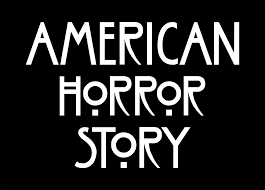

História
é uma série de televisão estadunidense antológica dos gêneros horror, suspense, drama e slasher criada e produzida por Ryan Murphy e Brad Falchuk para o canal de assinatura FX.[3] A série apresenta cada temporada com uma história independente, seguindo um conjunto diferente de personagens e ambientações distintas no mesmo universo ficcional e um enredo com seu próprio "início, meio e fim". Alguns elementos da trama de cada temporada são vagamente inspirados em eventos reais.[4][5] Muitos atores aparecem em mais de uma temporada, muitas vezes interpretando um novo personagem.
A primeira temporada, Murder House, é centrada na família Harmon, que se mudam para uma mansão restaurada em Los Angeles, Califórnia, sem saber que a casa é assombrada pelos seus antigos habitantes.[7]
redefiniu o gênero de terror apresentando contos que se passam desde um asilo assustador, coven de bruxas, show de horrores itinerante, um hotel assombrado e o próprio apocalipse.